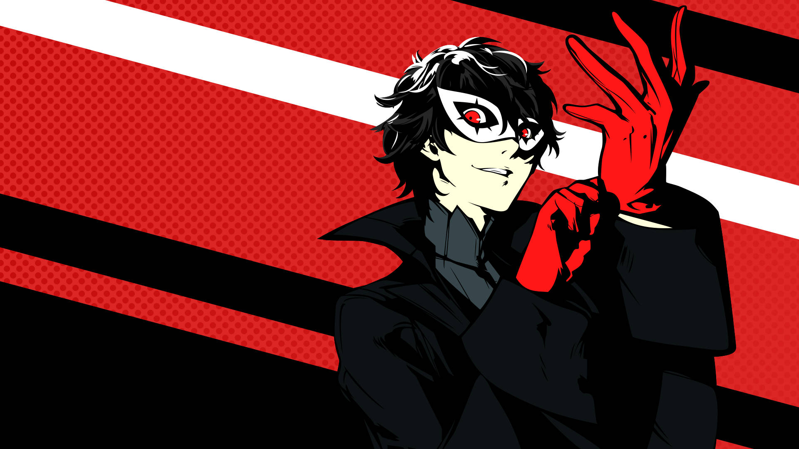

Who he is
Ren Amamiya also know as joker is a student who goes to He's a transfer student who goes to Shujin Acadamy. Ren Amamiya comes from the Persona series specifically from the 5th game in the series. Ren is the main character you play as, but under his quiet demeanor is a strong-willed wiled card and is the leader of the phanotm theives and capable of exploiting the Metaverse to affect reality. To his teammates, his code name is Joker, and to the residents of the Velvet Room he is known as the Trickster. The protagonist is the leader of the rebellious Phantom Thieves of Hearts, a group which aims to change society by touching the hearts of people and performing illegal heists.